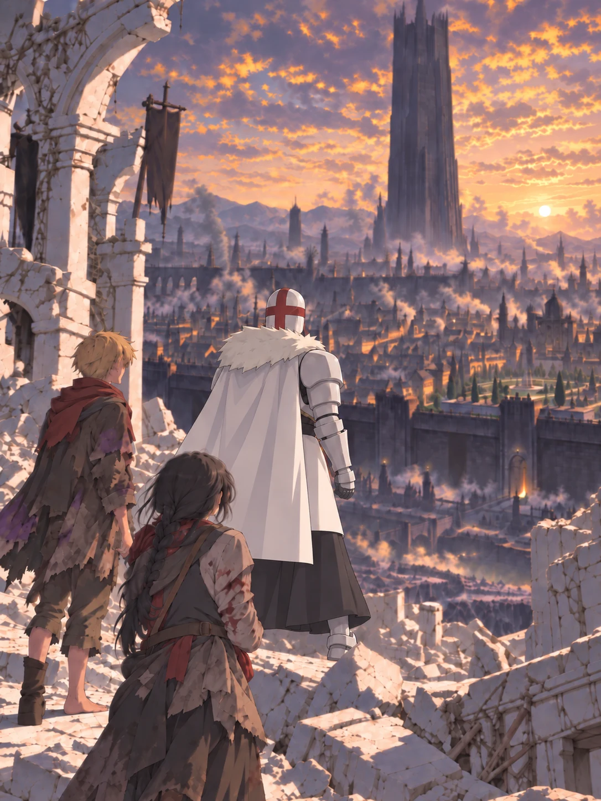
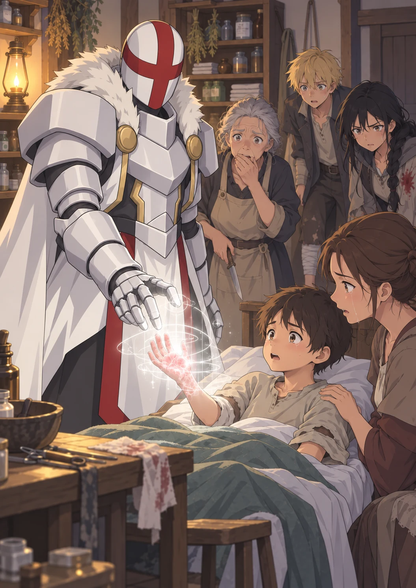

Volume One · Chapter Three
Among Black Mages
Orin had never been ordered to report his injuries by someone who had just erased three people.
It made the question difficult to answer.
The last of the white radiance had faded from the chamber, leaving afternoon light to fall through the holes Ultimos had opened in the ruins. Dust drifted inside those pale columns. Water from the ice mage spread across the broken spell circle in thin, shining streams.
Nothing moved where the Wardens had stood.
Kisaya remained behind Orin. He could feel her fingers gripping the torn back of his coat. The small disk pressed a hard circle beneath her jacket, hidden against her ribs.
Ultimos waited.
“Not badly,” Orin said.
Kisaya leaned close enough for her breath to touch his ear. “Compared with what?”
It was the first thing either of them had said that sounded remotely like themselves.
Ultimos raised one hand.
Orin went rigid.
A pale line opened across the white mage’s palm. It was no wider than a thread. The light passed over Orin from head to foot, then crossed Kisaya behind him. He felt nothing. No heat. No pressure. Still, the memory of the witch vanishing inside that same color locked every muscle in his body.
The line disappeared.
“No fractures,” Ultimos said. “The girl’s arm requires cleaning. Her head has suffered a minor impact. Your left foot is cut in six places, and two of your knuckles are split.”
There was no concern in his voice. He might have been inspecting cracked masonry and deciding it would bear weight.
His attention settled on Orin’s missing boot.
“The foot will impede travel.”
Pale geometry closed around Orin’s ankle.
He tried to step back.
“Remain still.”
White light passed through his sole. Grit rose from the cuts in dark flecks and dropped onto the stone. The torn skin drew together beneath it, not pinched shut but restored so completely that Orin could no longer tell where the edges had been.
The pain vanished.
Ultimos lowered his hand.
Orin stared at his foot. Relief should have come first. Instead he remembered the witch disappearing in that same light and wondered how narrowly restored differed from removed.
Kisaya looked down at the blood drying along her sleeve. “You could fix all of it?”
“Yes.”
She waited.
“Your bodies are already correcting the remaining damage,” Ultimos said. “Intervention is unnecessary.”
“You can see all that?” Orin asked.
“I can see the shape a living body is attempting to preserve.”
Ultimos turned away.
Orin looked at the empty floor beyond him.
And what shape it could be made to lose.
Above the chamber, a distant crash rolled through the ruins. Birds burst from the broken towers. Their cries scattered into the open sky.
Kisaya released Orin’s coat. Her hand moved immediately to the front of her jacket, checking the disk through the fabric.
Ultimos faced the city.
“The seat of your Conclave,” he said. “The Black Spire. Where is it?”
“At the center of Veyr,” Orin said. “It rises above everything else. You can see it from almost anywhere above ground.”
The question carried intention rather than curiosity. He meant to go there.
“You can’t,” Orin said.
Ultimos faced him.
“Define the obstacle.”
Orin’s mouth went dry.
Kisaya moved out from behind him. Her braid hung half undone over one shoulder. Dust softened the bruise at her temple, but it could not hide it.
“He means you can’t walk through the south gate dressed like that,” she said. “You look like a historical execution poster that learned to walk.”
Ultimos regarded her in silence.
He stepped from the ruined platform. His armored foot settled beside the smooth black sphere that had once been the Warden’s staff. He did not look down at it.
“If I enter openly,” he said, “what will the Conclave do?”
“Seal the bridges and search every house between here and the Spire,” Orin said.
“Orders could reach every gate within the hour,” Kisaya added. Her hand tightened over the disk. “They could move whatever matters from the archive and burn the rest.”
The light along Ultimos’s armor dimmed.
“Can your magic restore the records?”
“Not words I have never read. If those records name other Meridian temples, their destruction could condemn others to remain sealed.”
Orin looked at the empty places where the Wardens had stood.
Others.
More people like Ultimos, sleeping beneath ruins while the world forgot what it had buried.
“The Conclave will also punish anyone connected to us,” Kisaya said. “Anyone who saw us, fed us, or admits we passed through their street. They can shut the Ashward ovens, stop water deliveries, take whole buildings for questioning. Every order makes more noise and gives the people with your answers more time to disappear.”
Ultimos considered that as a commander measuring terrain.
“Open conflict would scatter the witnesses, endanger the records, and expose surviving practitioners before I know how many remain,” he said. “We enter concealed.”
Kisaya blinked. “Just like that?”
“You mistake delay for reluctance.” The light along Ultimos’s armor sharpened. “I will not let vengeance finish what the Severance began. I have endured four hundred years. I can wait until I know where to strike.”
Orin did not know the word Severance. The way Ultimos spoke it made the name sound less like a battle than a wound that had never closed.
Ultimos crossed the chamber toward the tunnel his spell had carved through the wall. Daylight shone at its far end.
“You supplied relevant information. I used it.”
He stopped at the mouth of the tunnel.
“You know the city. You will guide me to the archive and explain its present authorities.”
Ultimos entered the tunnel without waiting for agreement.
Orin caught Kisaya’s sleeve before she could follow.
“We could let him go,” he whispered.
“And wait here for the next patrol?”
“We could take the western road.”
Kisaya looked toward the ruined ceiling. Alarm bells had begun to carry faintly across the open ground above them.
“Those three tried to kill us before he opened his eyes,” she said. “Now their commanders know we were chased into the Meridian, and we have the thing they murdered a man to take. Every road out will have Wardens on it.”
“You don’t trust him.”
“No.” For once, the answer held no humor. “But when the Warden threw fire at us, he stopped it. If the next one finds us alone, no one will.”
Her hand pressed flat against her jacket.
Orin looked at the empty places in the chamber. He did not feel safe following Ultimos. That was different from believing he could survive without him.
They entered the tunnel together.
The tunnel had walls as smooth as polished glass. His beam had passed through packed earth, buried stone, and the roots of an ancient tree without leaving scorch marks. At the far opening, the late sun framed him in white.
Ultimos looked from the city wall to the white armor still visible beneath his cape.
“Concealment is the fastest path to what I require,” he said. “Do not mistake it for fear.”
He stepped into the sun.
That, apparently, was agreement.
They climbed through the wound in the ruins and emerged beneath a collapsed arcade several streets from the buried temple. The pillar of light had transformed the landscape around it. Trees leaned away from a round opening in the earth. White dust covered the broken roads. Far to the north, bells were ringing inside Veyr.
Not the slow bells that marked the hour.
Alarm bells.
Orin counted three towers answering one another.
“They saw it,” he said.
“Everyone saw it,” Kisaya replied.
Ultimos stood at the edge of the arcade and looked across the ruins.
Veyr’s black wall cut the horizon. Beyond it rose tiled roofs, chimneys, shrine towers, and the Black Spire. The city looked almost peaceful from here. Smoke drifted gold in the lowering sun. Wind wheels turned above the western warehouses. Far behind them, the Spire’s crooked crown vanished into haze.
Ultimos did not look at the Spire first.
His attention shifted to a cluster of leaning tenements built against the inner side of the southern wall.
“Where is the eastern court?” he asked.
Orin looked the same way. “The what?”
“A garden stood beyond the seventh tower. Three terraces. A reflecting pool divided by a white bridge.”
Kisaya squinted at the wall. “That’s the Ashward.”
“It is called what?”
“The Ashward. Kilns, dye sheds, worker housing.”
Ultimos said nothing.
Orin remembered the stranger in the chamber asking where the eastern tower had gone. There had been seven, he had said. Orin had assumed he meant watchtowers or fortifications.
Not a tower beside a garden he could still describe after four centuries in darkness.

The alarm bells rang again.
Kisaya pointed west. “There’s a drainage culvert beneath the old lime road. It comes out behind the tanneries.”
“The culvert has a grate,” Orin said.
“It had a grate.”
“When did you—”
“Do you want the complete history of every city fixture I’ve damaged, or do you want to leave before people arrive?”
The choice was unfairly simple.
They kept low among the ruins, following roads that had forgotten they were roads. Orin tore a strip from the least ruined part of his coat and wrapped his restored foot against the broken stone. It was a poor substitute for a boot, but it kept the grit from his skin.
Behind them, Ultimos moved without sound.
That became more unsettling the longer it continued. Armor should have clicked. Greaves should have struck stone. A man wrapped in metal should not have crossed loose rubble more quietly than a cat.
At the remains of a bathhouse, Kisaya stopped beside a wall blackened by old fire. She scraped soot into both hands.
“Your cape,” she told Ultimos.
He looked at the soot.
“White is noticeable,” she said.
“White was not considered an offense when this city had standards.”
“Now it’s considered either an offense or a confession.”
Ultimos caught the edge of his cape. Pale lines ran beneath the cloth.
The fabric folded across itself.
Orin stepped closer despite every instinct suggesting distance. Threads moved like the lines of a spell circle. The long white cape shortened, widened, and rolled over the armored shoulders. Its outer weave opened. Soot lifted from Kisaya’s hands in a soft black cloud and sank evenly into the cloth.
A moment later, a charcoal-gray traveler’s cloak hung around Ultimos. A deep hood concealed the white helmet and its red cross. The fur at his collar flattened beneath overlapping folds. Even the broad shape of his pauldrons narrowed as the cloth settled around them.
No needle. No dye vat. No new thread.
The same fabric remained. Ultimos had redistributed its weave into a shape he understood and used Kisaya’s soot to darken it.
“Better,” Kisaya said.
Ultimos inspected the sleeve. “Crude.”
“You were a walking pillar of white metal.”
“The disguise, not the observation.”
Orin looked away before either of them noticed he had almost smiled.
The culvert lay where Kisaya promised, beneath slabs choked with thorn vine. Someone had cut through the iron grate years ago and wired the pieces back into place. She unwound the wire while Orin watched the road.
Ultimos watched the wall.
“This carried water from the lower reservoirs,” he said.
“Now it carries rain, dead rats, and people avoiding gate taxes,” Kisaya said.
She pulled the grate aside.
Ultimos stared into the narrow dark.
“Wait until you smell it.”
Ultimos entered without answering.
The culvert brought them beneath the wall.
It also brought them beneath everything the streets had washed away that week. Orin crawled with one hand over his nose. Kisaya muttered threats against the city’s drainage planners. Ultimos said nothing at all, which Orin had already learned was the more dangerous response.
They emerged behind a row of abandoned tanning sheds as the sun touched the western roofs.
Veyr had changed while they were gone.
Black-robed Wardens stood at the end of every major street. Runners carried sealed messages between them. Red alarm ribbons hung from posts along the southern road, warning citizens to clear the way for licensed mages. Above the rooftops, three figures rode circles of wind toward the ruins.
People crowded windows and doorways, pointing toward the pale scar still fading from the sky.
Orin pulled Ultimos into the shadow of the nearest shed.
The movement happened before he remembered whom he was touching.
His hand landed against the armored chest beneath the cloak.
Ultimos looked down at it.
Orin removed it. “Sorry.”
Ultimos returned his attention to the street.
They waited until two Wardens passed. One carried a glass lantern filled with blue flame. The other touched walls and doorframes with an earth-marked rod, making the bricks hum as he searched for recent magical damage.
Ultimos leaned slightly toward the street.
Kisaya caught his cloak.
“No.”
“His detection pattern leaves half the structures unexamined.”
“That is not an invitation to correct him.”
The Wardens moved on.
They slipped into the evening crowds.
Orin had known the Ashward his entire life, from the pawnshop that opened after midnight to the alleys where rainwater grew deep enough for children to swim. He knew which yards paid Kisaya fairly for roof work, which clerks trusted him to copy a tally, and which secondhand stalls saved rain-damaged primers no one else would buy. Walking beside Ultimos made every familiar street look staged.
The white mage noticed everything. He diagnosed wasted heat in a communal oven and a weak foundation beneath a newly repaired drain before Kisaya told him to criticize the city more quietly.
Wind mages unloaded grain at the southern storehouses. Sacks drifted from a wagon in neat lines, guided through upper windows without ladders. A boy below stepped beneath one as its binding slipped. The nearest mage snapped two fingers. Air caught the sack before it crushed him and lowered it gently to the ground.
The boy’s mother bowed again and again.
The mage waved her away and returned to work.
“Does she serve the Conclave?” Ultimos asked.
“She unloads grain,” Orin said. “She needs a license, but she isn’t a Warden.”
Ultimos watched that too.
His helmet remained hidden, but Orin sensed the stillness beneath the hood.
Black magic was everywhere. Not only in Warden hands or academy courts. It heated bread, repaired streets, moved food, held lamps above doorways, and drew clean water into the wealthier buildings uphill.
The black mages had not merely inherited the world.
They had arranged it around themselves.
The street widened near an old gatehouse. In its center stood a waist-high monument that Orin had passed so often he no longer saw it.
Ultimos stopped.
The carving showed a black-robed archmage breaking the fingers from a giant open hand. Tiny citizens sheltered behind his cloak. Four centuries of rain had softened every face, and soot filled the cracks. Gold survived only in the deepest cuts of the inscription:
WHAT THE GRASPING HAND TOOK, THE LIBERATION RETURNED.
People streamed around it without looking.
“Keep moving,” Kisaya said.
Ultimos did not.
His hidden face remained fixed on the broken stone fingers.
“Whose likeness is this?” Ultimos asked.
“No one person. It’s supposed to be all the first archmages.”
“That face belonged to none of them.”
“It’s on every monument.”
That answer seemed to offend Ultimos more than if the stone had worn the face of one of the men who sealed him.
He stepped toward the monument.
Kisaya planted herself in front of him.
She barely reached the middle of his chest.
“Not now.”
People flowed around them. A woman glanced at Ultimos’s deep hood, then at Kisaya’s bloodied sleeve. A Warden’s silver chain flashed at the far end of the street.
Ultimos studied the weathered stone past her shoulder.
“If I remove it,” he asked, “what replaces it?”
“Another monument,” Kisaya said. “And wanted notices on every wall in the district.”
Then he walked around the monument.
The stone hand remained standing behind them.
Orin released a breath.
They turned deeper into the Ashward. The elemental lamps became fewer. Streets that had been flat near the storehouses broke into patched steps and muddy hollows. Here the fire-workers charged by the hour, so families fed ovens with scrap wood. Earth mages repaired the trade roads first; rainwater collected between the tenements. Wind-driven lifts climbed the hill toward merchant homes while porters below bent under coal sacks.
The cloth beneath Orin’s bare foot wore through in a muddy hollow. Broken crockery sliced the same skin Ultimos had restored. Beneath occupied windows, asking him to summon white light would have been more dangerous than the reopened cut, so Orin tightened the cloth and kept walking.
Black magic was everywhere in Veyr.
It simply did not belong equally to everyone.
“We need bandages,” Orin said. His makeshift foot wrapping had already turned dark. “And somewhere to wait until the searches move north.”
Kisaya nodded toward a narrow stair descending between two buildings.
“Nema.”
Orin hesitated.
“She’ll ask questions.”
“She’ll ask whether we can pay. Then she’ll complain while helping anyway.”
“She could be arrested for helping us.”
Kisaya looked at Ultimos. “So could half the district if he decides to introduce himself.”
Ultimos had heard. He gave no sign.
At the bottom of the steps stood a door painted the same brown as the surrounding brick. No sign hung above it. Kisaya knocked twice, paused, then once more.
A panel slid open.
One dark eye examined them.
“We’re closed.”
“You don’t have hours,” Kisaya said.
“Then I’m always closed.”
The eye moved to Orin’s missing boot, Kisaya’s sleeve, and the tall hooded man behind them.
The panel shut.
Locks turned.
Nema opened the door just wide enough to seize Kisaya by the uninjured arm and pull her inside.
“What happened to you?”
“A quiet afternoon.”
“It is never quiet when you say that.”
Orin slipped through after her. Ultimos entered last, ducking beneath the lintel.
The room smelled of boiled linen and bitterroot. Shelves covered every wall, crowded with chipped jars, bundled herbs, clean rags, and bottles saved from better medicines. A single oil lamp burned on the table.
Nema was a small woman with gray threaded through her hair and the permanently reddened hands of someone who washed more wounds than dishes. She had patched Orin twice, Kisaya five times, and complained during every stitch.
Tonight, someone else occupied her narrow cot.
A boy of eight or nine lay with his right hand in a basin. His mother knelt beside him. A cooking burn covered his palm and two fingers, blistered skin split where he had tried to close them. Fever brightened his face.
Nema looked at Ultimos.
“Who is that?”
“A problem,” Kisaya said.
“I gathered.”
Ultimos’s attention had moved to the child.
More precisely, to Nema’s hands.
She returned to the cot and dried the boy’s palm. “I told you not to touch the stove latch.”
“It fell,” the boy whispered.
“Stoves are famous liars.” Her voice softened. “Hold still.”
Nema pressed two fingers below his wrist and spread the others above the burn.
Then she traced a shape in the air.
It was small. Incomplete. Nothing like the immense circles beneath the ruins. Three pale curves gathered between her fingertips, trembling whenever her hands did. The light touched the torn blister.
Ultimos’s right hand lifted by a fraction. Two fingers began to turn, following the second curve as if correcting it from across the room, then stopped halfway and folded back into his palm.
The edges of the wound pulled toward one another.
The boy whimpered.
Ultimos’s hand dropped to his side. Orin had seen that kind of interruption when he asked about the eastern tower, as though the man had stepped out of the present.
Nema whispered through the pattern again. Sweat gathered at her temple. The separated skin drew closer, but the flesh beneath reddened as it tightened.
“Stop,” Ultimos said.
The pale curves vanished.
Nema spun. One hand went beneath the table and came up holding a kitchen knife.
The boy’s mother drew him against her.
“Get out.”
“You are closing the surface over damaged tissue.” Ultimos approached the cot. “The blood, skin, and muscle are not separate injuries.”
“I said get out.”
“You are forcing the margins together instead of restoring the hand’s prior structure. If you continue, the fingers will heal without full movement.”
Nema’s knife wavered.
“Who are you?”
Ultimos ignored the question. “How do you orient yourself before binding the Meridian?”
The room seemed to contract around the word.
Orin knew it as a place on an old map. A dead section of ruins. A name that had made a witch afraid.
Nema seemed to know even less.
“The what?”
“The ruins?” Orin asked.
“The temple beneath them was built where the Meridian gathers,” Ultimos said. “The temple is a focus. The Meridian is what she is touching now.”
He turned back to Nema.
“You draw upon it without knowing its name,” he said. “The connection is unmistakable.”
Nema’s fear changed shape. She lowered the knife by an inch.
“It’s healing,” she said. “Just healing.”
“There is no just healing.”
The words came sharper than anything Ultimos had said since entering the city.
The boy’s mother held him tighter.
Orin stepped between the cot and the white mage before he could consider whether this had become a habit.
“Can you help him?”
Ultimos looked down at Orin.
“The hand has a correct form,” he said. “It will be restored.”
“Without hurting anyone?” Kisaya asked.
Ultimos looked toward her.
“The clarification is unnecessary.”
“It really isn’t.”
Ultimos extended his hand to the boy.
The mother recoiled.
Nema caught her shoulder. Her gaze had fixed on the thin white lines appearing around Ultimos’s gauntlet.
“Let him,” she whispered.
“Nema—”
“Look at the pattern.”
Orin looked.
At first, he saw no pattern at all. There were none of the circles, runes, or channels required for an elemental spell. Light gathered above the burned hand in fine layers, each following the exact bend of bone and flesh beneath it. It did not cover the injury.
It described the hand as if the wound had never happened.

Ultimos lowered two fingers.
White light entered the burn.
The boy gasped.
Blistered skin softened. Redness faded from the edges inward. The split across his palm closed—not pulled together, but re-formed into smooth flesh. His swollen fingers straightened. Even the soot beneath one torn nail rose free in a dark curl and fell onto the sheet.
The same color that had erased three people passed gently through a child’s hand.
When it faded, no scar remained.
The boy opened and closed his fingers.
Once.
Twice.
His mother began to cry.
Ultimos released the hand.
The boy touched his palm as if it belonged to someone else. “It doesn’t hurt.”
Nema sat down hard on the edge of the cot. “How?”
“The hand possessed a correct form before it was damaged. I restored it. Phrases are guides for those who cannot hold the structure clearly.”
Wonder overcame her fear one careful breath at a time. “Where did you learn?”
Ultimos answered with a question. “Where did you study?”
Nema gave a short, uncertain laugh. “Study?”
“Who instructed you in restoration?”
“My grandmother taught me the joining shape. The fever pull too, though it only works sometimes. Her father knew a bone-setting pattern.”
“Who instructed her? Which school?”
The wonder left her face.
“There are no schools.”
The question died between them.
Nema glanced toward the shuttered window before lowering her voice.
“There haven’t been white schools since the Liberation. You know that.”
“White schools,” he said.
“Any white practice is illegal. Doctors use stitches, splints, medicines. Black mages heat their water and chill their stores, but no one in a licensed clinic closes flesh with white light.” She rubbed her reddened hands against her apron. “If you cannot afford a doctor—or the clinic has no supplies—the rest of us use what our families kept and keep the shutters closed.”
Ultimos looked at the shelves.
The bitterroot. The boiled cloth. The saved bottles. Everything arranged by someone trying to replace knowledge with care and supplies with patience.
“That pattern,” he said. “It was the first restoration exercise taught in the eastern court. We corrected the second curve before a novice was permitted to work upon living tissue.”
Nema’s face tightened.
“It has saved people.”
“It is incomplete.”
“It is what I have.”
“You do not perceive the unified form. You drag tissue together and mistake closure for repair. A child in their first season would be corrected for less.”
Nema stood.
“Then perhaps the child had a teacher.”
The sentence struck more cleanly than anger could have.
Ultimos fell silent.
Orin saw the knife in Nema’s hand, the bandages prepared before she knew whether they could pay, and the boy flexing healed fingers against his mother’s cheek.
“She kept it alive,” he said. “Four hundred years without schools or books, while Wardens arrested anyone who used it.”
Ultimos looked from the healed hand to the shelves of boiled cloth and saved bottles. His contempt passed beyond Nema toward something four centuries away.
“A fragment,” he said.
Nema’s grip tightened around the knife. “All they left us.”
“No.” Ultimos looked at the damaged pattern fading above her palm. “All they failed to take.”
Nema lowered the knife, then pointed at a chair.
“Sit,” she told Orin.
He blinked. “What?”
“Your foot is bleeding on my floor. Whatever impossible thing your friend just did, I am not scrubbing you out of the boards.”
Ultimos looked at the blood Orin had tracked inside.
Nema pointed toward the shelves. “You can stand over there and avoid frightening my patients.”
Kisaya made a sound that became a cough when Ultimos faced her.
Orin sat.
Nema wrapped Orin’s foot, cleaned Kisaya’s arm, and pressed bitter paste against her bruise while Ultimos stood beside the shelves in silence. The healed boy kept peeking at him.
Before his mother left, she placed two copper pieces on Nema’s table.
Nema pushed one back.
“Buy him dinner.”
“You used your light.”
“Not mine tonight.”
The mother bowed to Ultimos.
One armored hand began a formal gesture from another age, then fell before the mother looked up.
When the door closed, Orin asked, “How much would the licensed clinic charge for that burn?”
Nema snorted. “More than she earns in a month. They’d clean it, sell her fever powder, and charge again if the fingers stiffened.”
“And if they knew what you did?”
“A fine if the inspector was hungry. A cell if he wanted promotion.”
Ultimos’s hand closed beneath the cloak.
“They outlaw the art,” he said, “then leave its remnants to tend the people their physicians do not reach.”
“That is one way to describe being poor,” Nema replied.
Kisaya looked almost pleased by his anger.
Orin knew that look. It was the same one she wore when someone else finally noticed a cruelty she had been naming for years.
Ultimos stepped toward Nema.
“Draw the joining pattern again.”
She stiffened. “Why?”
“I need to see precisely what your family preserved. Then I will show you the proper orientation.”
Hope flashed across her face.
Then alarm buried it.
“No.”
Ultimos stopped.
Nema glanced at the shutter. “Not tonight. The bells have been ringing since the sky turned white, and you arrived dressed like a funeral with two children the Wardens are already searching for.”
Orin’s head came up. “You know?”
“A description reached the south market before you did. Blond boy, black-haired girl, dangerous witnesses. You two have never been described flatteringly, but it was close enough.”
Kisaya muttered something impolite.
Nema continued. “Use your old drying loft above the shuttered glassworks. The rear ladder still holds. Stay until morning if you must. Do not bring Wardens to my door.”
“Thank you,” Orin said.
“Thank me by leaving.”
They did.
Night had settled over the Ashward. Elemental lamps burned along the main road, their red, blue, and yellow flames divided by license class. In poorer streets, ordinary candles trembled behind patched shutters.
The old glassworks stood three lanes away. Its furnace had collapsed years ago, leaving the upper floor cold and empty.
The loft had never belonged to them. Four winters earlier, Kisaya had climbed through its window and found eleven-year-old Orin asleep behind the drying racks, using a condemnation notice as proof that no owner was coming back. She had disputed his claim to the driest corner. By morning, they were sharing it. After the last hard freeze, they had begun putting aside copper for a room with a sound roof and a lock.
Kisaya climbed first. Orin followed more slowly with his bandaged foot. Ultimos looked at the ladder once, placed a hand against the brick, and rose without touching a rung.
Kisaya watched him step through the loft window. “You can fly.”
“I can move anything carrying active magic through the air unless it is warded or anchored,” Ultimos said. “My own body included.”
“That is flying.”
“To move myself, I must suspend the protections anchoring my form and concentrate on nothing else. I cannot defend myself or perform another spell until I stop.”
Kisaya stared at him. “And you let us crawl through a sewer.”
“The culvert concealed us. Flight would not.”
“I dislike you a little more than I did downstairs.”
Ultimos crossed to the opposite window without answering.
Orin lowered himself beside a cracked window before his legs failed. A few hours ago, Kisaya’s indignation might have made him smile anyway.
Now he could still see the black feather falling through white light.
Kisaya’s expression faded. She sat beside him and drew her knees up. Beneath her jacket, the stolen disk made a pale edge against the fabric. She covered it with one hand.
From the loft, Veyr rose in layers: the Ashward’s crooked roofs and narrow chimneys, merchant avenues bright with suspended fire, and water climbing glass pipes toward the upper districts.
At the center of everything stood the Black Spire.
It resembled an ancient castle drawn upward into the shape of a spear. Black walls twisted as they climbed, broken by hooked roofs, narrow battlements, and smaller towers fused into the central mass. No two levels appeared to face the same direction. Its highest spires disappeared into the clouds.
Ultimos looked at it for a long time.
“That is the Black Spire?” he asked.
“The Black Spire,” Orin said. “The Conclave governs from there. The central academy, Warden command, and the public ministries are all inside.”
“Your entire magical government occupies one structure?”
“Not all of it.” Orin considered the tower. “Only the parts that govern everything.”
Ultimos looked again at the twisted heights. “It did not exist.”
“Not before the Liberation,” Orin said.
“Who built it?”
“The first Conclave, supposedly.” Orin frowned. “Different histories credit different archmages.”
“When?”
“After the Liberation is as precise as they agree.”
Ultimos returned his attention to the streets. Three pale curves appeared above his palm: Nema’s joining pattern, copied with its backward second curve and unfinished third.
“Her family kept this, and fragments for fever and bone. Other lines may have preserved different pieces.” He corrected the second curve with one finger. “Found and compared, they could be reconstructed.”
The pattern faded. “I will return to the healer tomorrow.”
Orin glanced at Kisaya.
She sat straighter. “To teach her?”
“First to ask what else survived. Then to correct what she knows. If the fragments can be gathered, instruction can begin again.”
“A school,” Kisaya said.
“In time.” His hand lingered in the posture of an instructor before a vanished class. “Every fragment that survived is a failure of the Severance. I will gather them.”
For a moment, Orin saw the idea catch fire in Kisaya: forbidden healers learning openly while the Conclave watched knowledge spread beyond its control.
Then Kisaya touched the bruise at her temple.
“They would find out,” she said.
“Eventually.”
“And they would take Nema first.”
Ultimos faced her. “How are illicit practitioners discovered?”
“Patients talk. Neighbors notice. Wardens trade smaller punishments for names.”
“They only have to decide frightening the street will produce something useful,” Orin said.
Ultimos looked down toward Nema’s hidden door.
“Then instruction cannot begin from one visible place,” he said. “Routes, refuges, and means of extraction must exist first.”
“That isn’t all,” Kisaya said.
“What remains?”
“They have to choose it.”
“They choose each time they practice a forbidden art.”
“They choose to help one person,” Orin said. “That isn’t the same as choosing your war.”
“The war already reaches them.” Ultimos pointed toward the district below. “They hide their craft and inherit damaged fragments because instruction itself is a crime.”
“They survive,” Orin said.
“As remnants.”
The word filled the loft.
Kisaya rose. “That isn’t their fault.”
“Fault is irrelevant. Suffering is already present.” The lower edge of Ultimos’s helmet caught the city light. “Pain endured while resisting may produce freedom. Pain endured while obeying produces only more obedience.”
Orin thought of Nema’s kitchen knife shaking before a man who could have removed her home with one hand.
“You can survive the cost,” he said. “If they burn this street or arrest a hundred people to reach you, you’ll still be standing when it’s over.”
For once, Ultimos had no answer ready. Orin continued before his courage failed him.
“They won’t.”
Below, a patrol entered the Ashward. Four silver-chained Wardens walked beneath a floating globe of fire. Doors closed ahead of them. Conversations died. The crowd divided without being ordered.
Ultimos turned toward the window.
“They maintain their own chains.”
Kisaya flinched as if he had struck her.
“No,” she said.
Ultimos turned.
Her hands had closed into fists.
“I hate them,” she said, pointing toward the Wardens. “I hate that everyone steps aside. I hate that people lower their voices when black robes pass. I hate that Nema has to hide while licensed clinics charge families for less than she can do.”
“Then you understand.”
“I understand why someone keeps a door closed when opening it gets their child taken.”
Her voice shook. “Fear does not mean agreement. Sometimes it means they have someone they cannot afford to lose.”
Ultimos said nothing.
Orin saw the opening and hated himself for using it.
“If one white mage had defied the black mages,” Orin said, “and they answered by killing a hundred white families who never chose his rebellion, whose cost would that have been?”
Orin heard his pulse beating behind his eyes.
“Would that mage have possessed the right to spend their lives?”
Elemental light shifted along the Black Spire. Red became blue. Blue became silver. The colors moved across the hidden helmet beneath Ultimos’s hood.
Silence answered. For the first time since leaving the chamber, Ultimos had no immediate correction.
Kisaya looked from him to Orin. Some of the anger left her face.
Far below, the Wardens knocked on a door.
Ultimos watched until they moved on.
“An unwilling student is a compromised foundation,” he said. “The Order will not be reconstructed from prisoners.”
“And Nema?” Kisaya asked.
“No instruction begins until I understand how their searches spread and what protection can be prepared. Then knowledge will be offered to her. If she refuses it, what her family preserved will remain protected.”
His attention returned to the Black Spire.
“The Conclave will answer after I have removed from its reach everything it might destroy to deny me.”
“I have heard you,” Ultimos said. “That is all.”
Kisaya studied him, then sat again.
Ultimos faced the city.
The argument ended because Ultimos had ruled it finished.
Orin spread old canvas over the least broken floor while Kisaya divided a stale loaf from her cache. Ultimos refused his share. Orin decided not to ask whether sealed white mages became hungry.
Kisaya lay down with her back to the wall and one hand inside her jacket, curled around the stolen disk. Within minutes, exhaustion dragged her breathing into a slow rhythm.
Orin tried to follow.
Every time he closed his eyes, the chamber returned.
White light.
Empty stone.
A child opening an unburned hand.
Near midnight, he sat up.
Ultimos still stood at the window.
The gray cloak made him part of the dark. Only a narrow edge of white armor showed beneath it. His head was bowed, not toward the Black Spire now, but toward the streets immediately below.
Orin followed his gaze.
Across the lane, in the upper room of a crowded tenement, a pale glow trembled behind thin curtains.
A woman sat beside a narrow bed. Orin could see only her silhouette and the smaller shape beneath the blankets. Her hands moved slowly above the child’s chest.
Three curves.
The first faltered.
The second formed backward.
The third barely held together.
Ultimos knew the pattern.
Orin understood that without asking.
Perhaps Ultimos had practiced it when he was young. Perhaps he had corrected it in classrooms beneath the towers. Perhaps children in white robes had once complained that the exercise was too simple, never imagining a world in which three damaged curves would be passed from parent to child like a forbidden prayer.
The light went out.
The mother began again.
Behind her, the Black Spire loomed above Veyr. Elemental lights burned across its twisted heights, announcing the power of the mages who had inherited the city. Their radiance reached every district.
It did not enter her room.
Ultimos lifted one armored hand and placed it against the window frame.
For a moment, Orin thought he might cross the street.
He did not.
Below, the weak white pattern formed a third time.
“They did not merely kill them,” Ultimos said.
His voice was almost too quiet to hear.
Orin did not ask whom he meant.
The mother bent over her child. The hidden light shook between her hands.
“They made the world grateful for it.”